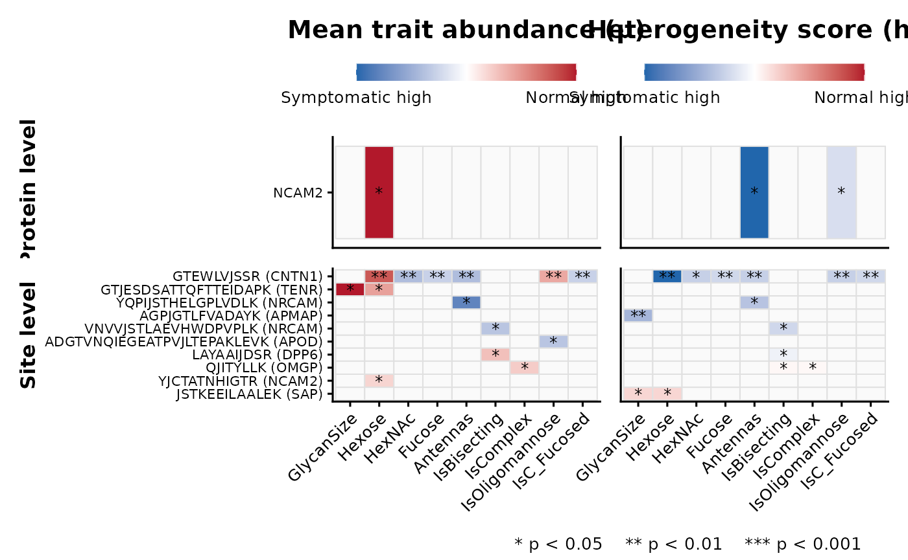
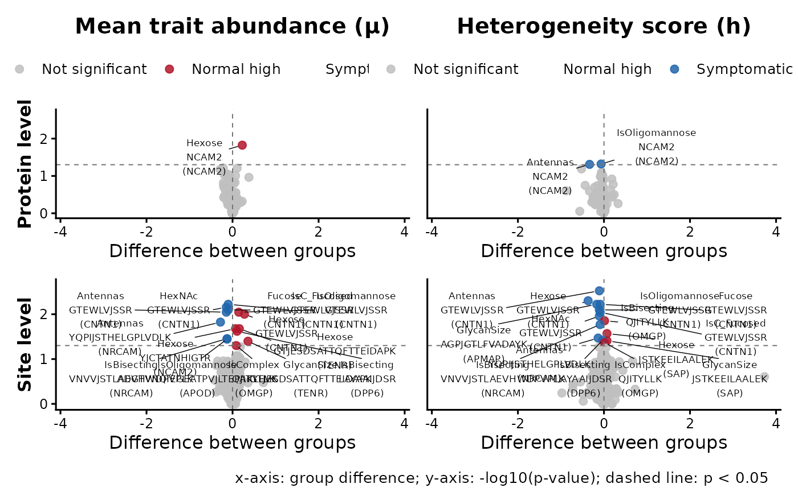

Abstract
glycoTraitR provides a streamlined workflow for analyzing glycan heterogeneity in glycoproteomics GPSM data generated by pGlyco3 or Glyco-Decipher. The package summarizes glycan structures into biologically interpretable traits, enabling downstream statistical analysis and visualization.
Introduction
glycoTraitR provides a streamlined workflow for extracting, summarizing, and analyzing glycan structural traits from glycoproteomics GPSM data generated by pGlyco3 or Glyco-Decipher. Rather than focusing on individual glycoforms, glycoTraitR summarizes glycan structures into biologically interpretable composition- and structure-based traits at the site or protein level.
In this quick start guide, we demonstrate how to:
- import GPSM results generated by pGlyco3 or Glyco-Decipher
- parse glycan structures represented as pGlyco3 strings or WURCS 2.0
- perform differential trait analysis using a permutation-based two-sample test
- visualize trait-level changes in glycan heterogeneity
Installation
The glycoTraitR package can be installed using BiocManager.
if (!require("BiocManager", quietly = TRUE)) {
install.packages("BiocManager")
}
BiocManager::install("glycoTraitR")After installation, we load the package into the current R session. All functions used in the following examples are provided by glycoTraitR.
Quick Start
This section demonstrates a typical glycoTraitR workflow using GPSM data generated by pGlyco3. Equivalent import code for Glyco-Decipher results is also provided.
1. Load example data
For reproducibility, this vignette uses a toy dataset bundled with glycoTraitR. The commented code below illustrates how to download and import the corresponding full public datasets from Zenodo.
# Option 1: Download and import the pGlyco3 result
# pglyco_url <- paste0(
# "https://zenodo.org/records/21386154/files/",
# "pGlycoDB-GP-FDR-Pro-Quant-Site.txt?download=1"
# )
# download.file(
# pglyco_url,
# destfile = "pGlyco3_GPSM.txt",
# mode = "wb"
# )
# gpsm <- read_pGlyco3_gpsm("pGlyco3_GPSM.txt")
# Option 2: Download and import the Glyco-Decipher result
# decipher_url <- paste0(
# "https://zenodo.org/records/21386154/files/",
# "decipher_result.zip?download=1"
# )
# download.file(
# decipher_url,
# destfile = "decipher_result.zip",
# mode = "wb"
# )
# unzip("decipher_result.zip")
# gpsm <- read_decipher_gpsm("decipher_result")
# Download the sample metadata used by both examples
# meta_url <- paste0(
# "https://zenodo.org/records/21386154/files/",
# "meta_mcp_2022_100433.rds?download=1"
# )
# download.file(
# meta_url,
# destfile = "meta_example.rds",
# mode = "wb"
# )
# meta <- readRDS("meta_example.rds")
# Load the bundled pGlyco3 toy dataset and sample metadata
gpsm <- readRDS(system.file("extdata", "gpsm_toyexample.rds", package = "glycoTraitR"))
meta <- readRDS(system.file("extdata", "meta_toyexample.rds", package = "glycoTraitR"))
head(gpsm)## # A tibble: 6 × 5
## Protein Peptide GlycanStructure File Count
## <chr> <chr> <chr> <chr> <int>
## 1 1OKO GYYJQSEGGSHTIQR (N(N(H(N)(H(N))(H(N(F)))))) KS_A… 1
## 2 5NTD GNVISSHGNPILLJSSIPEDPSIK (N(N(H(H(H))(H(H))))) KS_A… 1
## 3 A1AG1|A1AG2 NEEYJK (N(N(H(H(N(F)(H(A))))(H(N(H(… KS_A… 5
## 4 A1AG1|A1AG2 NEEYJK (N(N(H(H(N(F)(H(A))))(H(N(H(… KS_A… 1
## 5 A1AG1|A1AG2 NEEYJK (N(N(H(H(N(F)(H(A))))(H(N(H(… KS_A… 1
## 6 A1AG1|A1AG2 NEEYJK (N(N(H(H(N(F)(H(A))))(H(N(H(… KS_A… 1
head(meta)## # A tibble: 6 × 22
## Diagnosis `Sample number` `Tissue weight (mg)` `Age at baseline`
## <fct> <dbl> <dbl> <dbl>
## 1 Asymptomatic 1 62 77.1
## 2 Normal 110 72 70.8
## 3 Normal 118 74 75.7
## 4 Normal 12 57 80.8
## 5 Normal 125 52 89.2
## 6 Normal 127 24 85.2
## # ℹ 18 more variables: `Age at death` <dbl>, `APOE gene` <chr>, Braak <dbl>,
## # CERAD <dbl>, `Global Cog Func` <chr>, Reagan <dbl>, arteriol_scler <chr>,
## # ci_num2_gct <dbl>, ci_num2_mct <dbl>, cvda_4gp2 <chr>, dlbdx <dbl>,
## # Sex <chr>, hspath_any <dbl>, Race <chr>, tdp_cs_6reg <chr>,
## # tdp_stage4 <chr>, PMI <dbl>, File <chr>The gpsm object contains glycopeptide-spectrum matches,
including glycan structures encoded in pGlyco3 format.
The meta object provides sample-level annotations that will
later be used to define experimental groups.
2. Compute heterogeneity scores and test group differences
After importing the GPSM data, we use
analyze_hscore_changes() to perform the main analysis. This
wrapper function parses the identified glycan structures, extracts
glycan traits, computes sample-level heterogeneity scores, and tests for
differences between experimental groups.
By default, heterogeneity is evaluated at both the glycosylation-site
and protein levels. In this example, samples labeled as Normal
and Symptomatic are compared according to the
Diagnosis column in the metadata. Because the bundled toy
dataset was generated by pGlyco3, we set from = "pGlyco3".
For data imported with read_decipher_gpsm(), use
from = "decipher" instead.
set.seed(123)
res <- analyze_hscore_changes(
gpsm = gpsm,
from = "pGlyco3",
motifs = NULL,
meta = meta,
group_col = "Diagnosis",
group_levels = c("Normal", "Symptomatic"),
B = 1000,
min_samples = 3
)## Compute heterogeneity scores at each site and protein## Test heterogeneity change at site## Test heterogeneity change at proteinThe gpsm argument supplies the imported GPSM table,
while from specifies the search-engine format. The
meta table links sample identifiers to their corresponding
experimental groups. The B argument controls the number of
label permutations used to construct the null distribution, and
min_samples specifies the minimum number of samples
required for a trait–feature combination to be tested.
The returned object contains the results from both site- and protein-level analyses. Each row represents a glycan trait evaluated for a specific glycosylation site or protein and includes the estimated group difference and its associated statistical significance.
3. Inspect significant heterogeneity changes
The complete result table can be filtered to identify trait–feature combinations showing evidence of altered heterogeneity between the two groups. For example, the following code displays results with an unadjusted p-value below 0.05.
res[res$pval < 0.05, ]## trait score_type feature group1
## 10 GlycanSize mu GTJESDSATTQFTTEIDAPK (TENR) Normal
## 67 Hexose mu GTJESDSATTQFTTEIDAPK (TENR) Normal
## 80 Hexose mu YJCTATNHIGTR (NCAM2) Normal
## 108 Hexose mu GTEWLVJSSR (CNTN1) Normal
## 146 HexNAc mu GTEWLVJSSR (CNTN1) Normal
## 188 Fucose mu GTEWLVJSSR (CNTN1) Normal
## 218 Antennas mu YQPIJSTHELGPLVDLK (NRCAM) Normal
## 222 Antennas mu GTEWLVJSSR (CNTN1) Normal
## 241 IsBisecting mu LAYAAIJDSR (DPP6) Normal
## 243 IsBisecting mu VNVVJSTLAEVHWDPVPLK (NRCAM) Normal
## 259 IsComplex mu QJITYLLK (OMGP) Normal
## 299 IsOligomannose mu ADGTVNQIEGEATPVJLTEPAKLEVK (APOD) Normal
## 305 IsOligomannose mu GTEWLVJSSR (CNTN1) Normal
## 336 IsC_Fucosed mu GTEWLVJSSR (CNTN1) Normal
## 339 GlycanSize h AGPJGTLFVADAYK (APMAP) Normal
## 354 GlycanSize h JSTKEEILAALEK (SAP) Normal
## 411 Hexose h JSTKEEILAALEK (SAP) Normal
## 445 Hexose h GTEWLVJSSR (CNTN1) Normal
## 483 HexNAc h GTEWLVJSSR (CNTN1) Normal
## 525 Fucose h GTEWLVJSSR (CNTN1) Normal
## 555 Antennas h YQPIJSTHELGPLVDLK (NRCAM) Normal
## 559 Antennas h GTEWLVJSSR (CNTN1) Normal
## 568 IsBisecting h QJITYLLK (OMGP) Normal
## 578 IsBisecting h LAYAAIJDSR (DPP6) Normal
## 580 IsBisecting h VNVVJSTLAEVHWDPVPLK (NRCAM) Normal
## 596 IsComplex h QJITYLLK (OMGP) Normal
## 642 IsOligomannose h GTEWLVJSSR (CNTN1) Normal
## 673 IsC_Fucosed h GTEWLVJSSR (CNTN1) Normal
## 689 Hexose mu NCAM2 Normal
## 801 Antennas h NCAM2 Normal
## 826 IsOligomannose h NCAM2 Normal
## group2 mean_group1 mean_group2 diff pval n_group1
## 10 Symptomatic 9.53108183 9.1728836 0.35819823 0.039960040 9
## 67 Symptomatic 3.58461718 3.4269841 0.15763305 0.020979021 9
## 80 Symptomatic 4.93779956 4.8675445 0.07025507 0.020979021 9
## 108 Symptomatic 4.77443311 4.4985570 0.27587611 0.009990010 7
## 146 Symptomatic 2.05493197 2.2002165 -0.14528448 0.006993007 7
## 188 Symptomatic 0.01360544 0.1139971 -0.10039167 0.007992008 7
## 218 Symptomatic 2.12934066 2.4107143 -0.28137363 0.014985015 5
## 222 Symptomatic 0.05493197 0.2002165 -0.14528448 0.008991009 7
## 241 Symptomatic 0.70277778 0.5973714 0.10540640 0.023976024 7
## 243 Symptomatic 0.06780303 0.1959936 -0.12819056 0.034965035 6
## 259 Symptomatic 0.50871291 0.4235209 0.08519198 0.049950050 10
## 299 Symptomatic 0.42916667 0.5568254 -0.12765873 0.035964036 6
## 305 Symptomatic 0.94506803 0.7997835 0.14528448 0.008991009 7
## 336 Symptomatic 0.01360544 0.1139971 -0.10039167 0.005994006 7
## 339 Symptomatic 0.33366480 0.5020795 -0.16841467 0.005994006 9
## 354 Symptomatic 0.65701594 0.5871896 0.06982631 0.038961039 9
## 411 Symptomatic 0.65701594 0.5871896 0.06982631 0.026973027 9
## 445 Symptomatic 0.27296402 0.6409248 -0.36796079 0.004995005 7
## 483 Symptomatic 0.04891136 0.1561117 -0.10720036 0.010989011 7
## 525 Symptomatic 0.01230969 0.1006561 -0.08834643 0.005994006 7
## 555 Symptomatic 0.10602530 0.2413903 -0.13536501 0.033966034 5
## 559 Symptomatic 0.04891136 0.1561117 -0.10720036 0.002997003 7
## 568 Symptomatic 0.24570239 0.2317307 0.01397174 0.013986014 10
## 578 Symptomatic 0.20456239 0.2336238 -0.02906141 0.037962038 7
## 580 Symptomatic 0.05802256 0.1481910 -0.09016840 0.016983017 6
## 596 Symptomatic 0.24539684 0.2329422 0.01245464 0.042957043 10
## 642 Symptomatic 0.04891136 0.1561117 -0.10720036 0.007992008 7
## 673 Symptomatic 0.01230969 0.1006561 -0.08834643 0.008991009 7
## 689 Symptomatic 4.68843240 4.4627765 0.22565588 0.014985015 7
## 801 Symptomatic 0.56999429 0.9040375 -0.33404317 0.048951049 7
## 826 Symptomatic 0.11922739 0.1858701 -0.06664270 0.047952048 7
## n_group2 method level
## 10 6 permutation site
## 67 6 permutation site
## 80 9 permutation site
## 108 4 permutation site
## 146 4 permutation site
## 188 4 permutation site
## 218 3 permutation site
## 222 4 permutation site
## 241 8 permutation site
## 243 8 permutation site
## 259 9 permutation site
## 299 5 permutation site
## 305 4 permutation site
## 336 4 permutation site
## 339 8 permutation site
## 354 7 permutation site
## 411 7 permutation site
## 445 4 permutation site
## 483 4 permutation site
## 525 4 permutation site
## 555 3 permutation site
## 559 4 permutation site
## 568 9 permutation site
## 578 8 permutation site
## 580 8 permutation site
## 596 9 permutation site
## 642 4 permutation site
## 673 4 permutation site
## 689 6 permutation protein
## 801 6 permutation protein
## 826 6 permutation proteinThese results represent glycan traits whose heterogeneity differs between the Normal and Symptomatic groups at either the glycosylation-site or protein level. The corresponding analysis level can be identified from the relevant result column.
4. Visualize heterogeneity changes
The analysis results can be visualized using a heatmap and a volcano plot.
plot_hscore_heatmap(res)
plot_hscore_volcano(res)
The heatmap summarizes group-associated heterogeneity patterns across selected trait–feature combinations, facilitating comparisons among proteins, glycosylation sites, and glycan traits.
The volcano plot displays the magnitude of each heterogeneity change together with its statistical significance. Trait–feature combinations with larger absolute group differences appear farther from zero on the horizontal axis, whereas those with stronger statistical evidence appear higher on the vertical axis.
Define Your Own Glycan Motifs
In addition to the pre-defined glycan traits, glycoTraitR allows users to define custom glycan motifs of biological interest. These motifs are detected within glycan structures and can be incorporated directly into downstream trait analyses.
In this vignette, we will:
- Parse glycan structures into graph trees
- Visualize full glycans & motifs
- Perform subgraph isomorphism matching using igraph functions
- Count occurrences of motif patterns
1. Parse and plot glycan trees
We first parse glycan structures into tree representations.
Internally, glycans are represented as graphs, where nodes correspond to
monosaccharides and edges represent glycosidic linkages.
# Example: parsed glycan trees from existing GPSM data
glycans <- lapply(gpsm$GlycanStructure, glycoTraitR:::pGlyco3_to_tree)We use the function build_glycan_igraph() to visualize
an example of glycan structure.
# visualize example structures
igraph_obj <- build_glycan_igraph(glycans[[1]])
plot_glycan_tree(igraph_obj)
This visualization highlights the branching structure and residue composition of a glycan, which is essential for understanding motif topology.
2. A Simple User Motif (Example 1)
This example demonstrates how to define and detect a simple glycan motif consisting of three hexose (H) residues connected in series.
Here we define a linear trisaccharide motif:
- H — H — H
- Edges:
"a-b","b-c"
#### Example 1 ####
# (1) Select a glycan from pGlyco3 data
tree_full <- glycans[[2]]
g_full <- build_glycan_igraph(tree_full)
# (2) Define motif manually
motif <- list(
node = c("H", "H", "H"),
edge = c("a-b", "b-c")
)
g_motif <- build_glycan_igraph(motif)
# (3) Perform subgraph matching
type_levels <- union(
unique(V(g_full)$type),
unique(V(g_motif)$type)
)
n_match <- count_subgraph_isomorphisms(
g_motif, g_full,
method = "vf2",
vertex.color1 = factor(V(g_full)$type, levels=type_levels),
vertex.color2 = factor(V(g_motif)$type, levels=type_levels)
)
# (4) Visualize
par(mfrow = c(1, 2))
plot_glycan_tree(g_motif)
plot_glycan_tree(g_full)
## [1] "2 motif(s) found in the glycan"The reported match count indicates how many times the specified motif occurs within the full glycan structure.
3. Motif Containing Fucose (Example 2)
More complex motifs can also be defined, including branched structures and specific monosaccharide types such as fucose (F).
This example defines a branched motif containing Fucose:
#### Example 2 ####
# (1) Select a glycan
tree_full <- glycans[[6]]
g_full <- glycoTraitR::build_glycan_igraph(tree_full)
# (2) Symbolic motif definition
motif <- list(
node = c("H", "N", "F"),
edge = c("a-b", "b-c")
)
g_motif <- glycoTraitR::build_glycan_igraph(motif)
# (3) Subgraph matching
type_levels <- union(
unique(V(g_full)$type),
unique(V(g_motif)$type)
)
n_match <- igraph::count_subgraph_isomorphisms(
g_motif,
g_full,
method = "vf2",
vertex.color1 = factor(V(g_full)$type, levels = type_levels),
vertex.color2 = factor(V(g_motif)$type, levels = type_levels)
)
# (4) Visualize motif vs. full glycan
par(mfrow = c(1, 2))
plot_glycan_tree(g_motif)
plot_glycan_tree(g_full)
## [1] "1 motif(s) found in the glycan"4. Integrating Motifs with glycoTraitR (for Trait Computation)
Multiple user-defined motifs can be supplied simultaneously.
Once defined, these motifs are treated as additional glycan traits and
are incorporated into the trait computation workflow.
user_motifs <- list(
LinearH3 = list(
node = c("H", "H", "H"),
edge = c("a-b", "b-c")
),
FucBranch = list(
node = c("H", "N", "F"),
edge = c("a-b", "b-c")
)
)Each user-defined motif can be input as an option.
set.seed(123)
res <- analyze_hscore_changes(
gpsm = gpsm,
from = "pGlyco3",
motifs = user_motifs,
meta = meta,
group_col = "Diagnosis",
group_levels = c("Normal", "Symptomatic"),
B = 1000,
min_samples = 3
)## Compute heterogeneity scores at each site and protein## Test heterogeneity change at site## Test heterogeneity change at protein
res[res$trait == "LinearH3" & res$pval < 0.05, ]## trait score_type feature group1 group2 mean_group1
## 377 LinearH3 mu HMJETSHTQGSLR (NTRK2) Normal Symptomatic 1.6766667
## 380 LinearH3 mu GTEWLVJSSR (CNTN1) Normal Symptomatic 1.7458617
## 787 LinearH3 h HMJETSHTQGSLR (NTRK2) Normal Symptomatic 0.4106247
## 790 LinearH3 h GTEWLVJSSR (CNTN1) Normal Symptomatic 0.3358212
## 905 LinearH3 mu NCAM2 Normal Symptomatic 1.6524975
## mean_group2 diff pval n_group1 n_group2 method level
## 377 1.4485450 0.2281217 0.03896104 5 6 permutation site
## 380 1.4430014 0.3028602 0.01098901 7 4 permutation site
## 787 0.6734827 -0.2628580 0.02897103 5 6 permutation site
## 790 0.7520359 -0.4162148 0.02197802 7 4 permutation site
## 905 1.4204154 0.2320821 0.02297702 7 6 permutation proteinYour motif counts will automatically appear as additional glycan traits in the trait matrices.
Conclusion
In this vignette, we demonstrated how to define custom glycan motifs, detect their occurrences within glycan structures, and incorporate them into the glycoTraitR trait analysis workflow.
## R version 4.5.2 (2025-10-31)
## Platform: x86_64-pc-linux-gnu
## Running under: Ubuntu 22.04.2 LTS
##
## Matrix products: default
## BLAS: /opt/R/4.5.2/lib/R/lib/libRblas.so
## LAPACK: /usr/lib/x86_64-linux-gnu/lapack/liblapack.so.3.10.0 LAPACK version 3.10.0
##
## locale:
## [1] LC_CTYPE=en_US.UTF-8 LC_NUMERIC=C
## [3] LC_TIME=en_US.UTF-8 LC_COLLATE=en_US.UTF-8
## [5] LC_MONETARY=en_US.UTF-8 LC_MESSAGES=en_US.UTF-8
## [7] LC_PAPER=en_US.UTF-8 LC_NAME=C
## [9] LC_ADDRESS=C LC_TELEPHONE=C
## [11] LC_MEASUREMENT=en_US.UTF-8 LC_IDENTIFICATION=C
##
## time zone: Asia/Tokyo
## tzcode source: system (glibc)
##
## attached base packages:
## [1] stats graphics grDevices utils datasets methods base
##
## other attached packages:
## [1] igraph_2.2.1 glycoTraitR_0.1.1 BiocStyle_2.38.0
##
## loaded via a namespace (and not attached):
## [1] gtable_0.3.6 jsonlite_2.0.0 dplyr_1.1.4
## [4] compiler_4.5.2 BiocManager_1.30.26 Rcpp_1.1.0
## [7] tidyselect_1.2.1 parallel_4.5.2 jquerylib_0.1.4
## [10] systemfonts_1.3.1 scales_1.4.0 textshaping_1.0.4
## [13] yaml_2.3.10 fastmap_1.2.0 ggplot2_4.0.0
## [16] R6_2.6.1 labeling_0.4.3 patchwork_1.3.2
## [19] generics_0.1.4 knitr_1.51 htmlwidgets_1.6.4
## [22] ggrepel_0.9.6 tibble_3.3.0 bookdown_0.46
## [25] desc_1.4.3 bslib_0.9.0 pillar_1.11.1
## [28] RColorBrewer_1.1-3 rlang_1.1.6 utf8_1.2.6
## [31] cachem_1.1.0 xfun_0.56 fs_1.6.6
## [34] sass_0.4.10 S7_0.2.0 otel_0.2.0
## [37] cli_3.6.5 withr_3.0.2 pkgdown_2.2.0
## [40] magrittr_2.0.4 digest_0.6.37 grid_4.5.2
## [43] pbapply_1.7-4 rstudioapi_0.17.1 lifecycle_1.0.4
## [46] vctrs_0.6.5 evaluate_1.0.5 glue_1.8.0
## [49] farver_2.1.2 ragg_1.5.0 rmarkdown_2.30
## [52] pkgconfig_2.0.3 tools_4.5.2 htmltools_0.5.8.1